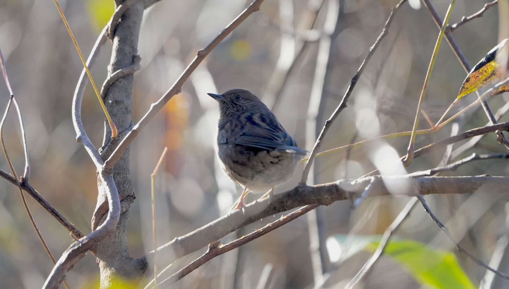
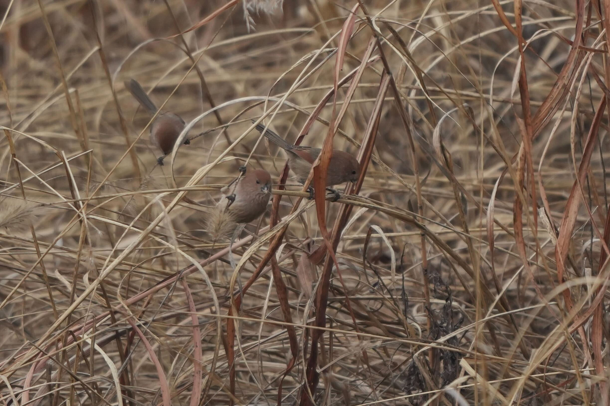
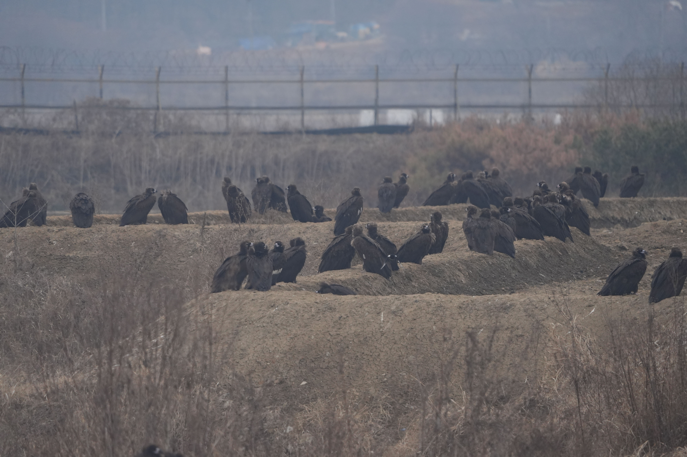
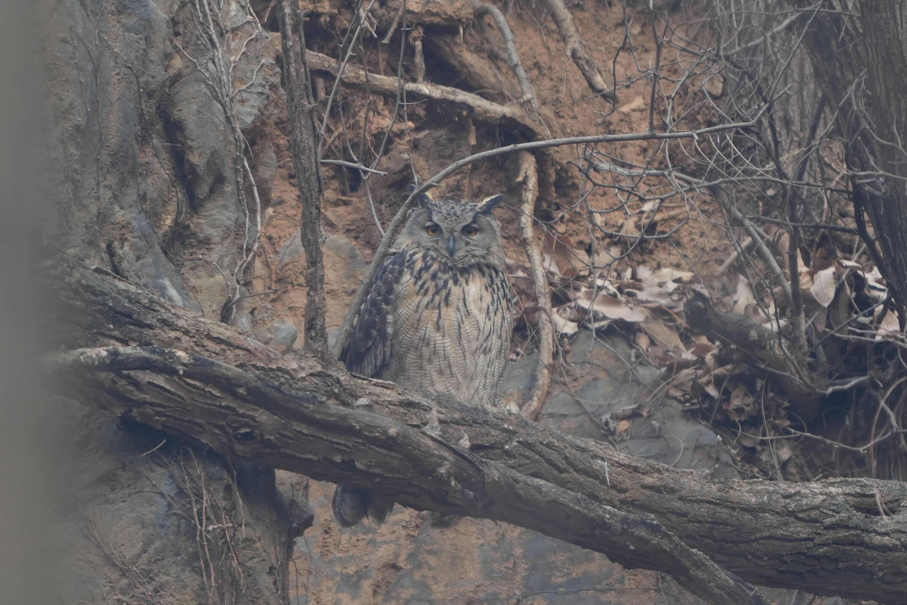

初見のカヤクグリ（逆光）。六甲山はシカがまだ少なく下層植生が豊かなのが、個体数が多い理由か。
島根の割り子そば。天皇家にも供するものらしい。殻ごと挽くので色が濃い。たれは甘い

ダルマエナガの群れ@韓国

クロハゲワシの大群。幼鳥だけがここに集まるらしい。かなりの数がいるらしく、重要な局所個体群

ワシミミズク@坡州市、20年以上（代代わりしつつ？）繁殖を続ける
北朝鮮が見えるスタバ。作業している農家、軍人も観察できた